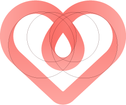
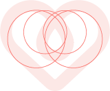
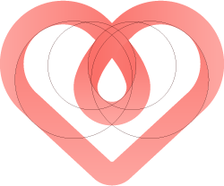
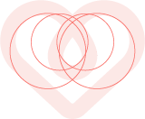
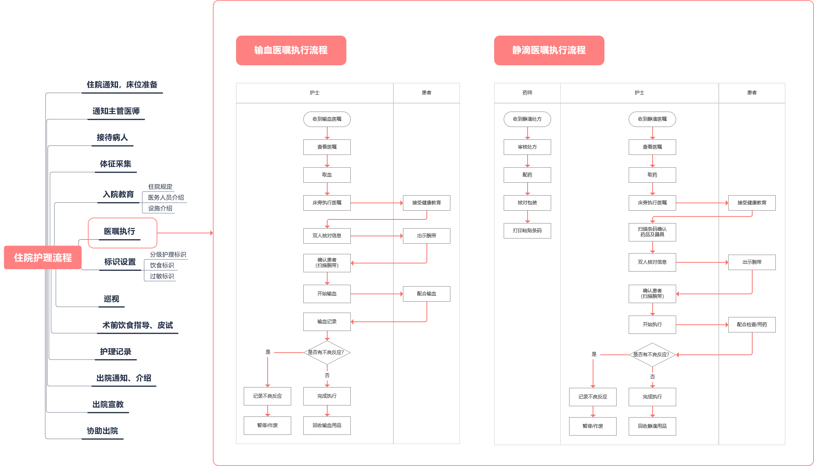
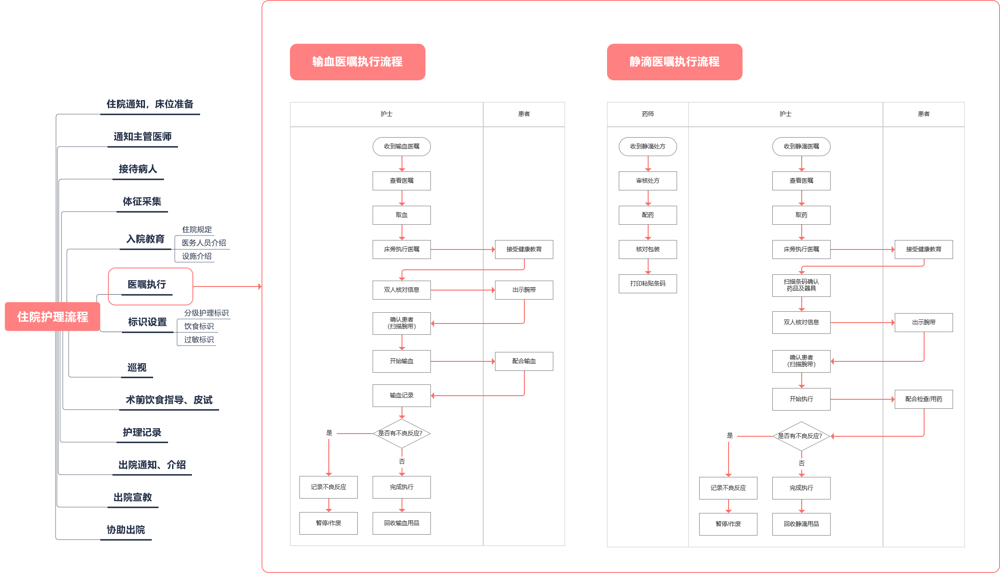

移动护理是基于HIS(医院信息系统)、EMR(电子病历系统)的手持移动终端系统。
Mobile nusering is a handheld mobile terminal system based on HIS ( hospital information system ) and EMR ( electronic medical record system ).
目标用户：医院护士。
Target audience: nurses in hospital.
产品定位：护理好帮手。
Product positioning: assistant for nursing.
产品目标：辅助护士进行日常护理；方便护士查询信息；协调科室工作。
Objective: assisting nurses in daily care; facilitating nurses to query information; coordinating department work.
设备：需要特定的医疗手持PDA，由多个护士共用。设备外观与手机类似，顶端安装专用的扫描头。
Equipment: specific medical handheld PDA, shared by multiple nurses. The appearance of the device is similar to mobile phone, with a dedicated scanner installed at the top.
专业
PROFESSIONAL关爱
CARE温和
GENTLE干净
CLEAN#fa7069
RGB (250, 112, 105);
#031a3f
RGB (3, 26, 63)
#fce8e6
RGB (252, 232, 230)
#d0d0d8
RGB (208, 208, 216)
关爱
care点滴
drip生命
life 



首页是功能入口，
Homepage is the collection of major functions,
根据功能的重要性及使用频次，
According to the importance of the function and the frequency of use,
从上至下分别为数据区、执行区、查询区、其他。
It is divided into data area, execution area, query area, and others from top to bottom.
病人页面为护士所负责的病人列表，
This page is a list of patients information,
标识病人护理等级，分为特级、一级、二级、三级护理。
lables are used to identify nursing level, including special, primary, secondary, and tertiary care.
可按待接诊、转入、转出、出院登记、预出院登记、预出院结算等不同状态筛选病人。
Patients can be selected according to different statuses such as waiting for admission, transfer in, transfer out, discharge registration, pre-discharge registration, pre-discharge settlement, etc.
病人呼叫后护士可直接在移动终端接听处理，
This page is a list of patients information,
接听界面提供病人的诊断结果、主治医生、责任护士等基本信息。
lables are used to identify nursing level, including special, primary, secondary, and tertiary care.
提供病人受理记录，方便护士协调工作。
Patients can be selected according to different statuses such as waiting for admission,
transfer in,
transfer out, discharge registration, pre-discharge registration, pre-discharge
settlement, etc.
 
